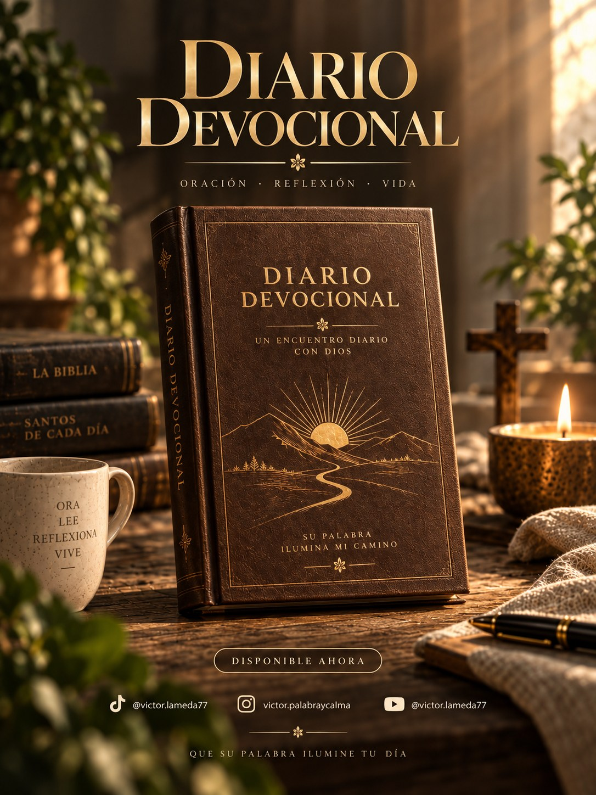

Víctor Lameda proclama la Palabra de Dios cada día — reflexión, oración y comunidad, para encontrar la paz que solo Dios da.
Víctor es Ingeniero Civil, con más de 20 años de experiencia — un oficio donde aprendió, dice él, la importancia de construir con bases sólidas. Pero la obra más hermosa que reconoce en su vida es otra: el servicio a la Iglesia.
Su camino comenzó en la Parroquia Santísima Trinidad, Táchira, Venezuela, donde recibió el llamado a iniciar la formación como aspirante al Diaconado Permanente en la Diócesis de San Cristóbal, Táchira, Venezuela — un proceso que aún recorre. Ahí sirvió como lector, ministro extraordinario de la Eucaristía y acólito, coordinó las Comunidades Eclesiales de Base, colaboró con Cáritas parroquial, acompañó la catequesis de adultos y lideró la Hermandad de Emaús.
Hace un año, junto a su esposa Vanessa, sintió el llamado a "lanzar las redes" en un nuevo horizonte: la Parroquia San Andrés Apóstol de Naranjales, Táchira, Venezuela, donde hoy acompaña al Padre Miguel Duque como coordinador de liturgia, catequista de adultos y acólito encargado de la sacristía.
De ese camino nace "La Palabra de Hoy" — la forma que encontró de llevar la Buena Noticia también al entorno digital. Lo dice con una humildad que define todo el proyecto: no busca que sea su voz la que se escuche, sino la de Cristo, quien —dice— lleva el timón de esta barca.
"Proclamar la misericordia de Dios, custodiar la belleza de la Liturgia y acompañar a las familias para que descubran al Emmanuel —el Dios con nosotros— presente en la Eucaristía y en el hermano."

Un devocional interactivo, día a día, con versículo, reflexión, oración y espacio para tus propias notas. El primero de una serie de cuatro.
Empezar ahoraSi este espacio te acompaña y quieres ayudar a que siga llegando a más personas — la producción, las transmisiones en vivo, el tiempo dedicado — cualquier aporte, grande o pequeño, se recibe con gratitud.